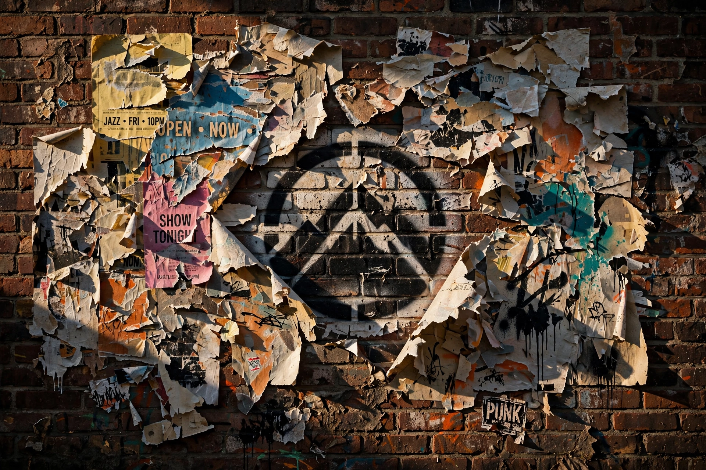

Logo graffiti đường phố
Chuyển Đổi Logo Thành Nghệ Thuật Graffiti Đường Phố Chân Thực Transform the uploaded logo into a realistic urban wall scene where the logo silhouette

Nội dung prompt
Chuyển Đổi Logo Thành Nghệ Thuật Graffiti Đường Phố Chân Thực Transform the uploaded logo into a realistic urban wall scene where the logo silhouette is revealed through layers of torn posters. The logo must keep its exact shape and proportions, appearing as if multiple posters have been ripped away over time, exposing the shape naturally within the layered paper textures. Material details: Multiple overlapping poster layers with different colors, prints, and paper types. Ripped edges with fibrous texture, curls, and torn fragments. Aged paper with fading, stains, glue residue, and slight peeling. Some areas showing older layers beneath, creating depth. Physics behavior: Paper tearing should look natural — irregular edges, varying thickness, partial detachment. Edges curling outward due to humidity and time. Glue holding some sections while others peel away. Layer separation revealing deeper textures gradually. Surface interaction: Rough concrete or plaster wall beneath the posters. Glue marks and residue where posters were attached. Cracks, dirt, and weathering visible on exposed wall areas. Environment: Urban street setting - alley wall or city corner. Hints of surrounding posters, graffiti, or wear. No overly clean or staged look. Lighting: Natural daylight or soft urban lighting. Shadows inside torn layers creating depth. Subtle highlights on curled paper edges. Atmosphere: Raw. Layered. Time-worn. Authentic street texture. Camera & composition: Straight-on or slightly angled close-up view. Logo clearly visible through torn layers. Depth emphasized through overlapping paper textures. Format: Aspect ratio: STRICT 4:5 vertical. No text overlays. Style: Hyper-real urban surface photography. Physically accurate material aging and layering.
Prompt cùng thể loại
- Lệnh ẩn chatgpt
/magazinecover → bìa tạp chí /newspaper → báo in /poster → poster điện ảnh /billboard → quảng cáo billboard…
- PHỤC CHẾ ẢNH CŨ
PHỤC CHẾ ẢNH CŨ PROMPT 1: PHỤC CHẾ ẢNH CŨ CÓ MÀU – GIỮ NGUYÊN 100% DANH TÍNH GỐC PROMPT PHỤC CHẾ ẢNH CŨ CÓ…
- Prompt AI Object to Heels - chan thanh giay
AI Object to Heels / Stepping Transformation - chân dẫm lên vật thể và biến hình thành giày cao gót. Prompt…
- Prompt Crystal Cutting
trend "Crystal Cutting ASMR" Prompt ảnh General: A luxurious apple sculpture completely covered in thousands…